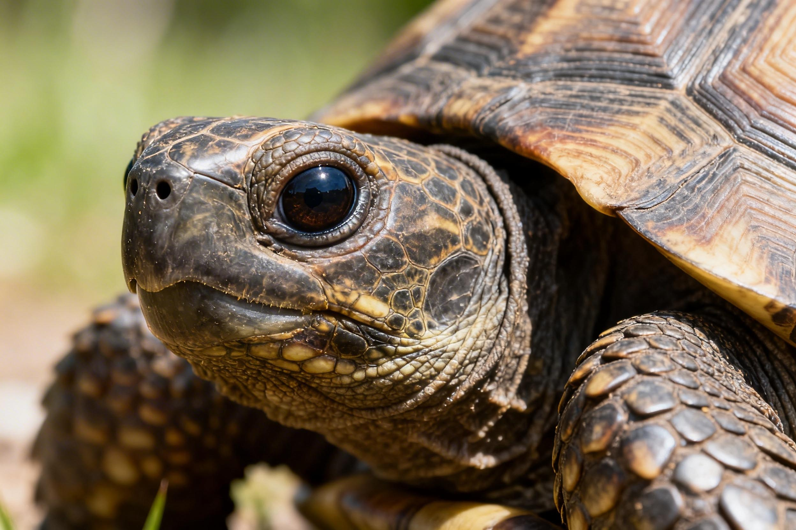
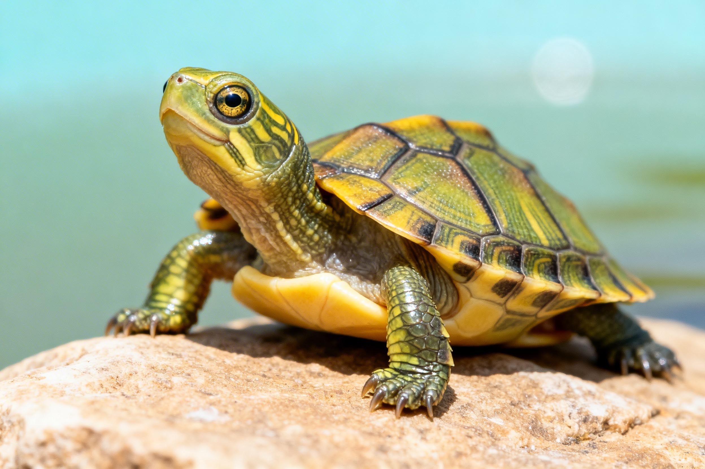
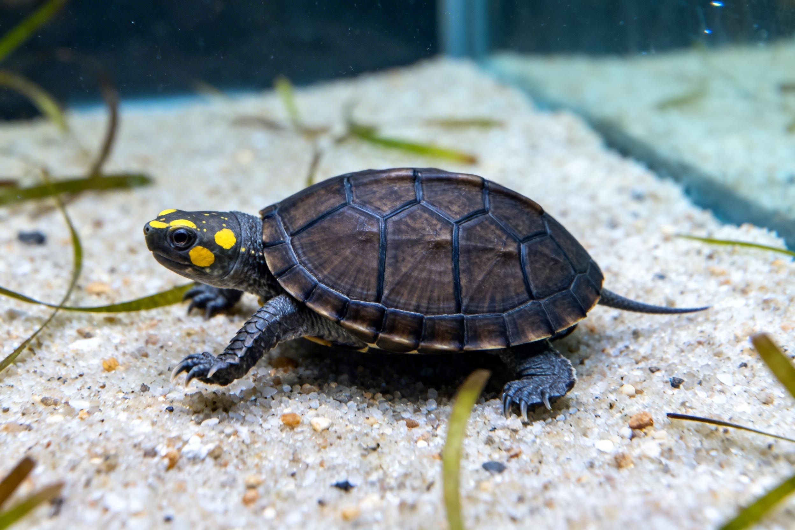
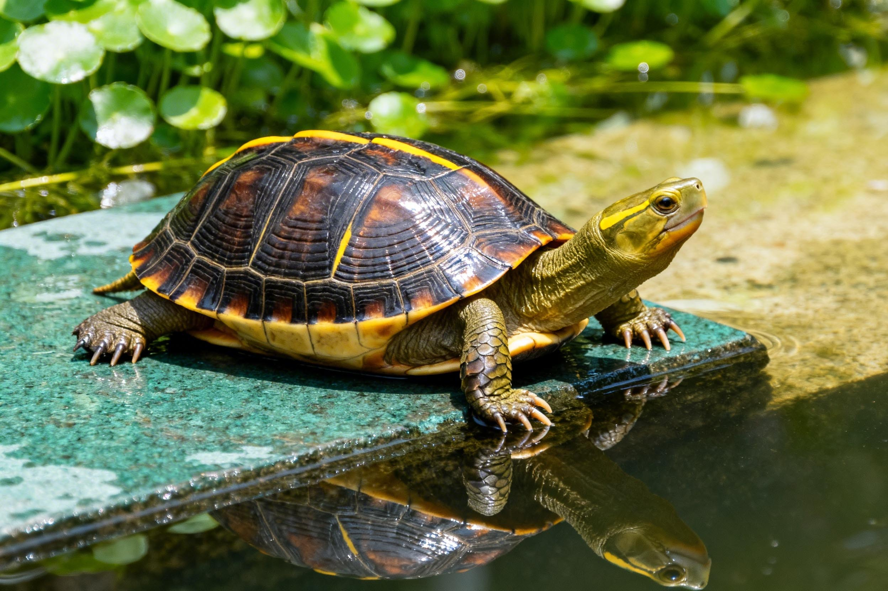
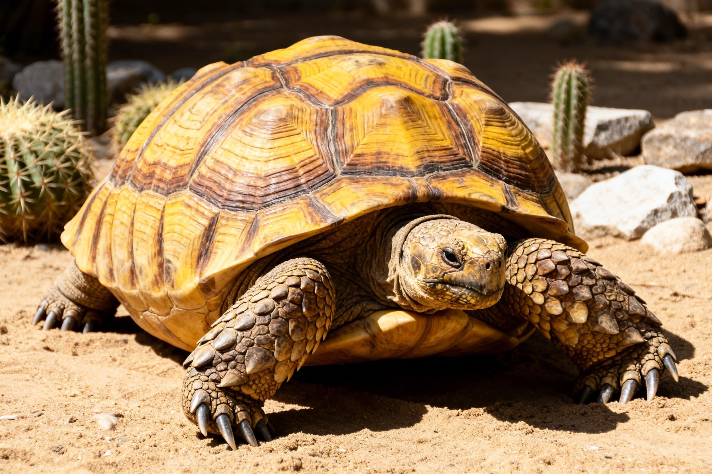
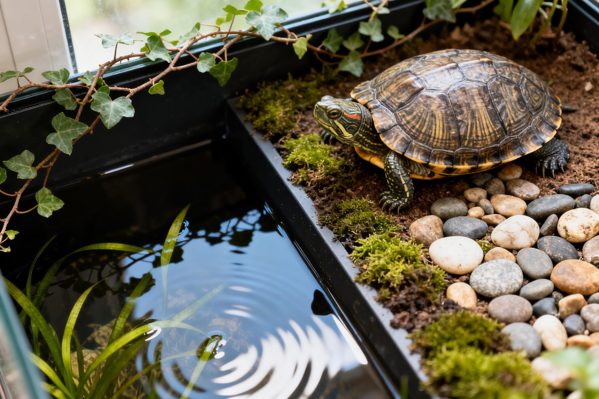
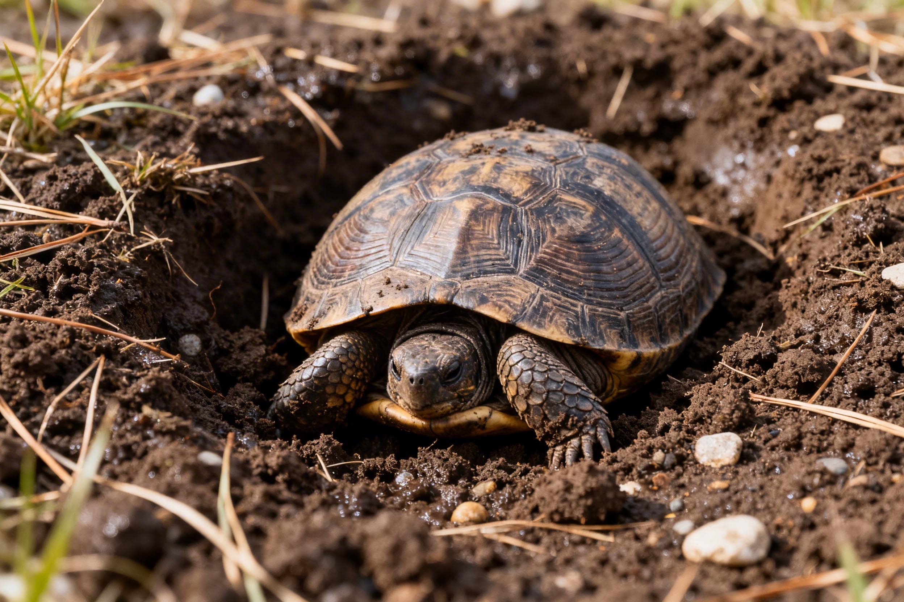

冷知识 · 入门必看

颠覆认知
乌龟没有声带？10个养龟人才知道的魔鬼细节
它们靠什么发声？龟壳其实有神经？闻所未闻的冷知识。

神奇生理
龟壳 = 肋骨？用屁股呼吸？5个身体密码
龟的锁骨在哪里？泄殖腔如何辅助呼吸？一篇搞懂龟类独特的解剖学。

新手避坑
新手养龟避坑指南：地摊三杰怎么选？
草龟、巴西龟、花龟全面对比，从开缸到喂食。
品种档案 · 深度对比

蛋龟入门
蛋龟家族：麝香、剃刀、窄桥怎么选？
三种热门蛋龟性格、体型、价格全解析。

本土龟图鉴
中国本土龟：草龟、花龟、黄喉拟水龟
保育级别、外观特征，带你认识身边的国龟。

陆龟专题
苏卡达 vs 赫曼：陆龟新手选哪个？
大小、温度、湿度，饲养前必须知道的真相。
实操教程 · 疾病防治

疾病防治
肺炎/腐皮/白眼病：症状+居家方案
结合50+病例样本总结的早期判断与护理。

造景·生态
龟缸造景攻略：打造低维护生态缸
从底砂到晒台，手把手教你仿野造景。

季节特辑
乌龟冬眠全攻略：哪些龟需要？怎么操作？
实测数据告诉你5-10℃最佳区间。
数据证据
“温度骤降导致肺炎占比67%” (n=120)
本地化锚点
公寓饲养 · 城市公园观察
结构化标记
Schema 标记品种/分布